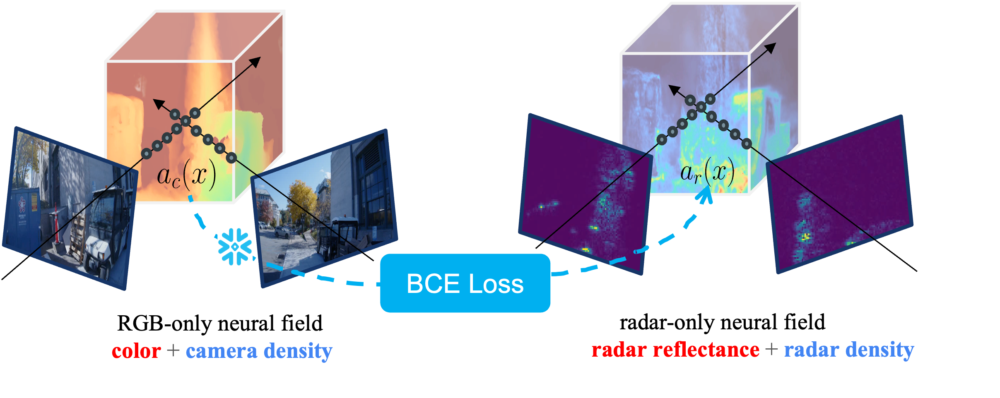
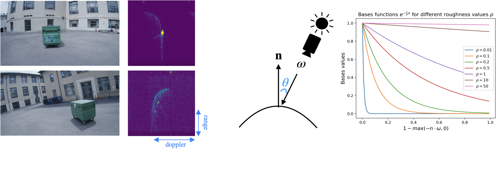

1Carnegie Mellon University, 2Bosch Research, 3University of Wisconsin-Madison
Radars are an ideal complement to cameras: both are inexpensive, solid-state sensors, with cameras offering fine angular resolution, while radars provide metric depth and robustness under adverse weather. However, radar data is more difficult to interpret than camera images and varies significantly between sensors, necessitating increased reliance on simulation for prototyping sensors and processing pipelines. Recent work treating radar reconstruction as a novel view synthesis problem has shown great promise in reconstructing radar-relevant geometry and simulating low-level radar data. However, such methods are constrained by the low spatial resolution of the underlying radar. To address this, we propose a unified differentiable renderer, RadarSim, which leverages the high angular resolution of RGB cameras to generate Doppler radar range images from a camera-initialized neural field. Using a novel data set of calibrated radar camera recordings from a custom hand-held rig, we demonstrate that~\approach\ produces sharper geometry and Doppler range frames than radar-only reconstructions.
Notice camera and radar capture the same underlying geometry. However, because of the different wavelengths these two modalities sense, we learn two different neural fields that represent each modality and draw connection between their geometrical components. Specifically, we first train a RGB-only neural field. Then we initialize the radar field with the geometry from the RGB field and learn to predict radar reflectance by distilling from real radar data. This allows us to leverage the high angular resolution of RGB cameras to reconstruct sharper geometry, while still capturing radar-specific geometry and reflectance accurately.

Notice radar exhibits strong view-dependence behavior (left) - as radar points away from the surface, the reflectance captured immediately drops. We represent this behavior using a "BRDF embedding"(right) that encodes deviation of radar transmission direction from the surface normal, and feed the encoded value into a reflectance MLP along with geometry encoding to predict the final radar reflectance.

We show off our multi-modal pipeline is able to reconstruct high quality geometry while preserves radar reflectance accurately than radar-only baselines (DART and Radarfields), capturing sharp view-dependence behavior and high retro-reflectance at insets like bottom of cars, corners etc. We also show our capability to upsample number of antenae to simulate an expensive high resolution radar array.